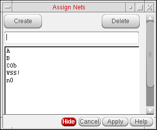
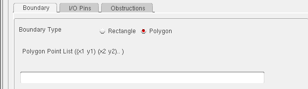
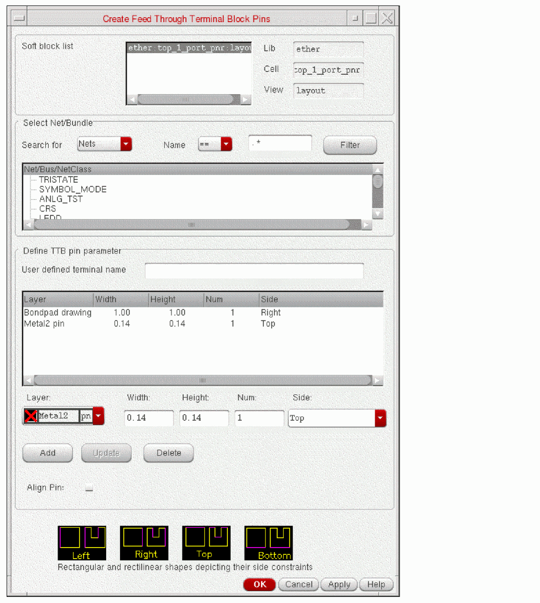
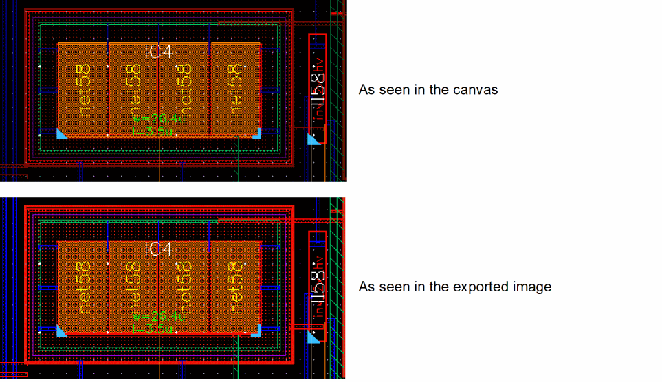

6
Editing the Layout
This chapter shows you how to edit the placement of components in the layout and how to add additional components. This chapter discusses the following topics.
- Constraint-Aware Editing
- Moving Objects
- Adding Components
- Adding a Pin
- Transistor Folding
- Pin Permutation
- Working with Incomplete Nets
- Editing In Place
- Editing Soft Blocks
- Soft Block Pins
- Working With Pin Connectivity Models
- Using Smart Display
- Enabling Net Name Display
- Editing Composite Waveguides (ICADVM20.1 Photonics Only)
For information on defining pin groups for external connections (must-connect groups), see
For information on using constraints to restrict the placement of objects, see the Virtuoso Unified Custom Constraints User Guide.
For information on optical pins and the Virtuoso Photonics Solution, see
Constraint-Aware Editing
Constraint-Aware Editing mode ensures that the Layout XL manual editing commands respect physical constraints that may be set on your design components.
Constraint-Aware Editing also checks constraints and displays violation markers at the appropriate location in the design window, if necessary. These checks are not run automatically but need to be explicitly initiated.
For example, if you run a Check Constraints batch check command or edit an object involved in a constraint, then Constraint-Aware Editing checks will be run on the appropriate objects in the layout. However, if you toggle the Constraint-Aware Editing mode, the constraint checks will not be automatically run nor will any violation markers be created or deleted.
As design edits are made, Constraint-Aware Editing continuously checks and readjusts the markers associated with the editing action. Constraint-Aware Editing mode is ON by default.
This feature allows layouts to be generated interactively while constraints are respected and the overall topology of the design is maintained, ensuring the designer's original intent is honored throughout the development of the physical implementation.
Enabling and Disabling Constraint-Aware Editing Mode
Constraint-aware editing is a session-wide setting. It applies to all existing and new windows opened in the current Virtuoso session. To toggle constraint-aware editing, do one of the following.
-
With your cursor in the layout window, press
F10.This works only if you have not reassigned theF10key to a different function. For a complete list of default bindkeys for Layout XL, see Default Bindkeys Defined for Layout XL. -
Press the CAE button on the Options toolbar.
- Click the right mouse button and choose Constraint-aware Editing while using one of the supported commands: Create Wire, Create Point to Point, Copy, Move, Stretch, and Rotate.
- Change the setting on the General Tab of the Connectivity form,
Click OK to accept the changes.
Objects, Commands, and Constraints Supported in Constraint-Aware Editing Mode
Constraint-Aware Editing supports the following design object constraint members:
- Instances, pins, and groups
-
Wires and vias, but only for the
lockedconstraint - Place and route boundary, but only for pin placement constraints when using the Stretch command
The following interactive commands are supported by Constraint-Aware Editing:
These commands honor the following constraints:
For detailed information on each of these constraints, see
Notes on Constraint-Aware Editing
-
The constraint checker cannot recognize certain types of user-defined Pcell guard ring instances and as a result reports these as violating cluster constraints. You can specify that these Pcell guard ring instances are ignored by the checker by setting the caeIgnoreInCluster property either on a specific guard ring instance or its supermaster (to ignore all instances of that supermaster).
-
If you use design-rule-driven editing in the Enforce mode in conjunction with constraint-aware editing, design rules are enforced not only for the object you are editing, but for all its constraint partners as well.For information on design-rule-driven editing, see the Virtuoso Design Rule Driven Editing User Guide.
- Constraint-aware editing does not edit or ghost constraint partners in pseudo-hierarchy levels. For example, if you have a symmetry constraint with one member inside a group and another member outside the group, then an edit to one member will not cause an additional edit to the other, even if the constraint becomes violated. In this situation, the following warning message is displayed: “Device will not be edited because it is on a different hierarchy level than its constraint partner. Ungroup this device to prevent constraints from being broken.”
-
To facilitate editing of members in pseudo-hierarchy levels, constraint-aware editing supports promoting the Symmetry and Matched Orientation constraints from the pseudo-hierarchy members to their pseudo-hierarchy containers.
However, for the constraints to be promoted, each constraint should have instances as members, and each instance member should belong to a group. After a constraint is promoted from its member to the member’s container, the containers behave in a constraint-aware manner, while the constraint itself is not modified. - If all the constraint members belong to a single figGroup, constraint-aware editing enforces these constraints by supporting the transparent group mode. However, if the constraint members belong to different figGroups, the transparent group mode cannot be supported and none of the constraints are enforced. For more information on the transparent group mode, see Using Transparent Group Mode in the Virtuoso Layout Suite XL: Basic Editing User Guide.
- When rotating a quad-symmetric device configuration using the axes of symmetry, you must select both the axes—vertical and horizontal—and then rotate them. If you rotate only one of the symmetry axes, the quad symmetry of the device is destroyed, resulting in constraint violations.
- Constraint-Aware Editing supports constraints at soft-block level. If you apply constraints, such as Alignment, Symmetry, and Distance, to the pins in a softblock and then edit those pins at the level above the soft-block level, the pins will be edited in accordance with the constraints applied at the soft-block level.
Moving Objects
There are three ways to move devices, pins, or shapes in the layout canvas.
- Use the Move command to manually drag the object to its new location.
- Use the Move options form to specify more precisely the conditions of the move operation.
- Use the Place As In Schematic command to move all the generated components inside the design boundary. If your design carries any unbound instances or pins, these will be placed below the design boundary.
Moving Objects Manually
To move an object manually in the layout canvas,
-
From the layout window menu bar, choose Edit – Move.
The layout window prompts you to select an object to move. -
Click an object in either the layout or the schematic.
The object is highlighted in both the schematic and layout windows. An outline of the object appears in the layout canvas and follows the cursor until you click in the layout canvas to place the object.
Draglines show the connections from pins of the selected object to pins of the nearest instance or the nearest I/O pin. For more information, see Changing the Appearance of Draglines.
The layout window prompts you to click the new location for the object. -
Click the location where you want to place the object.
The object is moved to the new location. -
Click another object to move or press
Escto cancel the command.
Moving Objects Using the Move Form
You can use the Move form to change:
- The layer of the object you select.
- The angles at which you can move the object.
- The presence of draglines on the object as you move it.
- The orientation of the object you select.
To move an object using the Move options form,
- From the layout window menu bar, choose Edit – Move.
-
Press
F3to display the Move options form.
- To change the direction in which you can move an object, choose one of anyAngle, diagonal, orthogonal, L90XFirst, L90YFirst from the Snap Mode cyclic field.
- To change the layer on which a shape is drawn, choose the new layer from the Change To Layer cyclic field. You can search for a specific layer-purpose pair using the search filter in the Change To Layer list box.
- Choose Treat as absolute point to consider the points specified in Delta X,Y fields as absolute points.
-
To specify a distance to move the selected component, use the Delta X and Y fields.
- Type the distance to move in the horizontal direction into the X field.
- Type the distance to move in the vertical direction into the Y field.
- Click Apply to complete the move.To show draglines for an object you move, turn on Display draglines.
For more information on draglines, see Changing the Appearance of Draglines. - To keep chained devices together as you move them, expand the Connections section and select a Chain Mode. Choose from All, Selected, Selected Plus Left, or Selected Plus Right.
-
To snap the moved object to the nearest grid, expand the Snap section and select Pins and boundary to grid. The snapping behavior depends on the block type. For digital blocks, the place and route boundary is snapped to the placement grid and pins with placement status placed are snapped to the routing grid. For analog blocks, both place and route boundary and placed pins are snapped to the manufacturing grid. Pins with placement status unplaced, fixed, locked, or unknown are not snapped, even if they were touching the boundary before the move.
- Select Pins to boundary to automatically snap pins to the place and route boundary.
-
Select Allow pin resizing to specify that the pin needs to be resized during pin snapping. For more information about pin snapping, see Snapping Soft Block Pins to Grid.
Environment Variable: allowPinResizingInEditThe Allow Pin Resizing setting that you make in the Move form is applicable only for the current instance. For all other instances, the Allow Pin Resizing setting in the Floorplan Global Options form is considered as the default setting. Changes that you make to the Allow Pin Resizing setting in the Move form cannot overwrite the global setting.
- To change the orientation of the object, click the button describing the transformation you want: Rotate, Sideways, or Upside Down.
Changing the Appearance of Draglines
When using the commands listed below, Layout XL displays draglines which connect the pins on the object to the nearest pins on another object on the net. When you move the object closer to a different object on the same net, the lines reconnect to the new object.
If you need to know more about the potential connections for the instance you are working on, you can change both the number and the appearance of the draglines using the options under Draglines in the General Tab of the Connectivity form.
You can display draglines for all the connections to the instance you are working on, hide the draglines for global nets and for power and ground nets, and have each dragline shown in a different color.
To set maxDragFig interactively so that it takes effect in the current session, type the following in the CIW, where win is the window to which the limit applies.
win~>maxDragFig = 1000
To set a default value for maxDragFig, which will be used in all future Layout XL sessions, put the following line in your .cdsenv file.
graphic maxDragFig int 1000 nil
Moving Generated Components into PR Boundary (Placing As In Schematic)
To move all the generated components in the layout and place them inside the design boundary at a position relative to their position in the schematic:
-
From the layout window menu bar, choose Connectivity – Generate – Place As In Schematic.
Alternatively, click the Place As In Schematic button ( ) in the Layout XL toolbar.
Notes
-
The Place As In Schematic (PAS) command moves all the instances and pins inside the design boundary, maintaining their position relative to the schematic. However, any unbound instances and pins are positioned below the design boundary.
The PAS command places physical-only power and ground pins at the top and bottom center of the design boundary, respectively.
To move the I/O pins so that they align to the edges of the design boundary, use the Place – Pin Placement command. For more information, see Pin Placement in the Virtuoso Custom Digital Placer User Guide. - The PAS command keeps the hierarchical instances together and tries to fit all the instances and pins within the design boundary. If there is no design boundary, Layout XL places the devices within a square the size of the default boundary (25% utilization).
- Factored and iterated devices are kept together and positioned in one or more rows depending on the size and number of the devices.
- When placing iterated pins, the default shape for these pins is determined based on their closest boundary edge. If the pins are too long for placement along the closest boundary edge, they are wrapped. Else, the pins are placed at the exact center of the design boundary.
- If some objects in the design, such as pins, are much smaller than the other components; the small objects might not initially appear in the layout, even though they have been moved. To view these small objects, you need to zoom into the layout.
- Although the PAS command aims at removing any component overlaps to retain the schematic topology, some overlaps might still exist, resulting in shorts. Markers for these shorts are displayed in the Annotation Browser.
- Layout XL does not compact the layout, so the placement of components might not meet the Design Rule Checker (DRC) or other design requirements.
-
Constraints entered using the Constraint Manager assistant are not honored by the PAS command. If a design has constraints, PAS will display the following message in the CIW:
“Design has placement constraints. The 'Analog Auto Placer' can be used to satisfy placement constraints.”
For more information about design constraints, see the Virtuoso Unified Custom Constraints User Guide.
Swapping Components
The Swap Components command lets you swap the positions of two components in the layout window.
Layout XL does not move any connections along with the components. If swapping a pair of components causes a short, markers show you where the short is. If swapping components causes an open connection, flight lines show the open connection.
- From the layout window menu bar, choose Edit – Advanced – Swap Components.
- Click the first component in the layout canvas.
-
Click the second component in the layout canvas.
Layout XL switches the locations of the components you selected, but retains the orientation of the component originally associated with the position.

Related Topics
Locking and Unlocking Devices
The Layout XL device locking capability sets a temporary locked constraint on a device in the layout. A locked device cannot be moved during interactive or automatic placement.
Locking a Device Using the Property Editor
To lock a device using the Property Editor assistant,
-
From the layout window menu bar, choose Window – Assistants – Property Editor.
The Property Editor assistant is displayed. -
In the canvas, select the device you want to lock.
The property information for the selected device is displayed in the Property Editor assistant. -
In the Property Editor assistant, select the Placement Status field and choose locked from the drop-down list in the right hand column.
A locked constraint is placed on the selected device. The Constraint Manager assistant is updated accordingly.
Locking a Device Using the Constraint Manager
To lock a device using the Constraint Manager assistant,
-
From the layout window menu bar, choose Window – Assistants – Constraint Manager.
The Constraint Manager assistant is displayed. - In the canvas, select the device you want to lock.
-
Choose Placement – Locked from the constraint pull-down in the Constraint Manager assistant toolbar.
A locked constraint is placed on the selected device and the Constraint Manager assistant is updated accordingly.
Unlocking a Device
-
From the layout window menu bar, choose Window – Assistants – Constraint Manager.
The Constraint Manager assistant is displayed. -
Choose the constraint you want to delete and click the Delete icon in the Constraint Manager toolbar.
The constraint is removed from the device.
You can also remove the locked constraint by changing the Placement Status in the Property Editor assistant. To do this,
To lock a device using the Property Editor assistant,
-
From the layout window menu bar, choose Window – Assistants – Property Editor.
The Property Editor assistant is displayed. -
In the canvas, select the device you want to unlock.
The property information for the selected device is displayed in the Property Editor assistant. -
In the Property Editor assistant, select the Placement Status field and change the value from locked to none.
The locked constraint is removed from the selected device. The Constraint Manager assistant is updated accordingly.
Adding Components
Adding an Instance
There are two ways to add to the layout an instance that is not present in the schematic.
-
Add the instance to the layout using the Create Instance command.
The incremental binder engine creates the appropriate bindings automatically, or you can use the Define Device Correspondence command to create user-defined bindings as before.
When adding physical-only instances, add the ignore property either at creation time or afterwards using the Property Editor assistant. - Add the instance to the schematic, connect it to a net, and then use Update Components And Nets to generate the new instance in the layout view. You need write permission for the schematic to do this.
To add an instance to the layout using Update Components And Nets,
-
In the schematic window, choose Create – Instance.
The schematic editor Add Instance form is displayed.
- Type the Library, Cell, and View names for the new instance in the fields provided.
- Move the cursor to the schematic. The outline of the instance follows the cursor.
- Click in the schematic where you want to place the instance.
-
To connect the instance to a net, use the schematic editor’s Create – Wire command.
For more information, see Adding Wires in the Virtuoso Schematic Editor User Guide. - To add the new instance to the layout view, choose Connectivity – Update – Components And Nets from the layout window menu bar.
-
Click Yes to re-extract the schematic.
Layout XL extracts the schematic and adds the new instance to the layout.
The incremental binder engine automatically determines the binding for the newly added instance. To change the binding after creation, use the Define Device Correspondence form.
Assigning Instance Pins to a Net
If you place an instance in a layout that does not have a connectivity source, the software does not connect the instances to any net unless you specifically assign the instance pins to a net using the Assign Nets command.
You can also use Assign Nets to connect a new instance to an existing net in a design that has a connectivity source.
To assign the pins of an instance to a net,
- Place new instances in the layout using the Create – Instance command.
-
Use the Annotation Browser assistant to display the incomplete nets in the canvas.
For more information, see Working with Incomplete Nets. -
Choose Connectivity – Nets – Assign.
The layout window and the CIW prompt you to select a pin. -
Click a pin in one of the new instances you have placed.
The pin you select is highlighted. The layout window and the CIW prompt you to select a net. -
Click a pin that is already connected to the net you want to add the new pin to.
The flight lines representing that net are extended to show that the new pin has been added to the net. The CIW lists the name of the pin and the name of the net it was connected to.
The layout window and the CIW prompt you to select another pin to add to a net. -
Press
F3to display a list of all the nets in the layout.
The Assign Nets form is displayed.
 -
To add a pin you selected in the layout to a net listed in this form, click the name of the net in the form and then click Apply.
The flight lines representing that net are extended to show that the pin is added to the net. -
Press
Escto exit the command.
Adding a Pin
Pins that occur in both the schematic and the layout must have identical names. If you add pins that are not in the schematic to the layout, Layout XL maintains their connectivity in the layout.
- In the Palette Assistant, choose the layer on which you want to create the pin.
-
From the layout window menu bar, choose Create – Pin.
The Create Pin form displays. For more information about the form, see Creating Pins in the Virtuoso Layout Suite XL: Basic Editing User Guide. -
In the Terminal Names field, type the terminal name for the pin.
The pin name must match the name of an existing net in the schematic. You can create more than one pin with the same name.
To create a pin for a net that is not on the schematic (for example, a feedthrough), give the pin a new name. - In the I/O Type section, choose the appropriate I/O type.
-
In the layout canvas, click to place one corner of the pin; then click to place the opposite corner of the pin.
The pin appears in the layout canvas. If the Annotation Browser assistant is showing incomplete nets, flight lines are drawn to show the pin connected to the net.
Do not place pins where you do not want to make a connection. For example, do not create a pin on polysilicon that covers the gate area of a FET.
You can also add pins defined with shapes. You can use any layer-purpose pair for pin shapes. Pins made as large as possible make routing easier.
For more information on the Create Shape Pin form, see
Transistor Folding
Transistor folding lets you interactively divide the following into two or more layout instances with terminals all connected in parallel to the same nets:
- an individual transistor or a chain of transistors
- an already folded transistor or a chain of folded transistors
- an individual FinFET device or a chain of FinFET devices
- a multi-fingered device or transistor. For more details, see Folding a Multi-fingered Device to Create Split Fingers.
Folding lets you change the aspect ratio of the devices in your design while retaining the original location and orientation of the device that was folded. The net on the left of the device (or on the bottom for vertically-oriented devices) is the same before and after folding.
The transistors to be folded need not be bound to a schematic instance but they must be assigned to a component type, which stores the width attributes set on the cell.
You set this information using the Edit Component Types command. For more information, see Component Types Mode.
.integer in the layout. For example, if you have an instance named I0 and you divide it into three folds, the folds are named as follows.| Instance Name | Folded Instance Names |
|---|---|
You must also have the mfactorSplit environment variable set to t in a setup file for the design, otherwise, the Generate Folded Devices command does not work.
- Additional Information on Interactive Folding
- Ignoring Schematic Mfactor during Folding
- Unit Identifiers in Layout XL
Additional Information on Interactive Folding
- Interactive folding might overwrite the default folding threshold value using the specifications you supply. For example, if you divide the transistor into too few folds, each fold might end up longer than the folding threshold value you specified for the component type. Automatic folding always respects the folding threshold value.
- If you enter a folding threshold value that would yield a device with more than 999 folds (for example, a device width of 2 and folding threshold of1, which can result in a device folded into 2M folds), the CIW prints a warning and does not fold the device. You can still fold such a large device manually.
- Interactive folding supports a maximum number of 500 folds to be generated for a device. Specifying a value greater than 500 issues a warning message in the CIW and no folding is performed.
-
Interactive folding rounds the width values using the rounding values specified in CPH to provide the accurate Total Width and individual width values prior to creating devices in the layout. For example, assume you have a device |P0 with
w = 3uand CPHRounding = (w 0.5u round). If you fold|P0into 7 folds with equal widths, each width in the form will be displayed as 428.571429n. Now, ifRoundingis applied when the devices are placed in the layout, the width of each folded device is set to 500n, making the form widths inconsistent with the device widths in the layout.
Instead, if the interactive folding uses the CPHRoundingvalue to round the width values at the time of the initial calculation, the form widths achieved are consistent with the layout widths. This provides a more realistic and reliable fold width information before the actual creation. -
Interactive folding always considers the parameter that sets the device width in the source, even if you have specified that this parameter is to be ignored in the
paramsToIgnoreForCheckenvironment variables. - To keep folded devices from becoming off-grid, set the Rounding option in the Configure Physical Hierarchy window. For more information, see Rounding Parameter Values.
- When folding FinFET devices, folding can be driven by the Number of fins parameter or the Width parameter set on the devices that are selected for folding. When folding based on Number of fins, the Generate Folded Devices form displays the folding values in fins instead of width.
- Interactive folding can retain folded devices as selected even after the devices are placed in the layout canvas. This behavior can be controlled using the retainSelectionSet environment variable.
Folding a Transistor or FinFET Device
To fold a MOS transistor or a FinFET device:
-
In the schematic or layout canvas, select the device you want to fold.
-
Choose Connectivity – Generate – Folded Devices.
The Generate Folded Devices form is displayed.
The name of the selected transistor or FinFET device is shown in the Transistor Name field. (If you did not select any transistors before choosing the command, no transistor-specific information is shown in the form until you select at least one transistor.)
The width of the selected transistor is shown in the Transistor Width field, which also indicates whether the value was retrieved from the schematic view or the layout view. -
Type the Number of Folds into which you want to divide the selected device.
Alternatively, use the bindkey Shift + Scroll Up/Down operation to increase or decrease the number of folds.
The maximum number of folds supported for a device is 500. Use the foldsLimit environment variable to control the maximum number of folds to be generated.This option is not available when folding a multi-fingered device. For more details, see Folding a Multi-fingered Device to Create Split Fingers. -
Click Apply in the form and move the cursor into the layout canvas.The outline of the folded device follows the cursor in the canvas.

If you have thelxBindKeys.illoaded, you can click the middle mouse button to rotate the device by R90, orShift-click the middle mouse button to flip the device alternately about its X and Y axes. -
Click in the layout where you want to place the folded device.
The folded device is placed in the canvas. The original device orientation is preserved. The net on the left of the device (or on the bottom for vertically-oriented devices) is the same before and after folding. -
Select the device again in the canvas.
The form updates to show the individual folds and the widths specified for them. - Select Use Threshold to fold based on the folding threshold value for the selected component type.
- Type the Folding Threshold value to specify the maximum device width beyond which the selected devices will be automatically folded.
- Select Chain Folds to automatically chain the newly created folds.
-
Click Apply in the form, move the cursor into the layout canvas, and click where you want to place the folded device.
The new folds are now chained together.
-
Select the device again in the canvas and change the widths of the individual folds in the form.This option is not available when folding a multi-fingered device. For more details, see Folding a Multi-fingered Device to Create Split Fingers.
-
Click the Distribute button to distribute the device width across the remaining folds, or type individual values into each Width field.
The system issues a warning if the total width you specify exceeds the schematic width or the effective width.
If you set a width with no unit, the unit is automatically updated with the default value of the CDF width parameter. For example, if the default CDF value is3uand you enter a width of6, the width is set to6u. If the default CDF value is3and you enter a width of6, the width remains set to6. See Unit Identifiers in Layout XL for a complete list of identifiers.
If the device selected for folding is a FinFET device driven for folding by the Number of fins value, clicking Distribute divides the total fins across all the folds such that each fold gets a whole number of fins. Total Fins is the sum of the fins in each fold of a FinFET device.The Fins field accepts only integer values for fins. If you type in a non-integer value, Layout XL automatically reverts to the last integer value.If a FinFET device has two fins and the Number of folds is specified as 2, clicking Distribute splits the fins between the two folds such that one fold has two fins and the other fold has one fin. When folding based on the number of fins, the distribution is always such that each fold gets a whole number of fins. -
Click Apply in the form, and then click in the canvas to place the new folded device.

Unfolding a Device
- In the Navigator assistant or layout canvas, right-click the folded device and choose Unfold from the shortcut menu.
The device is unfolded and reduced to a single fold of the same width as the schematic instance or to the total layout width if the unfoldUseLayoutWidths environment variable is set to t.
Folding Split Fingered Devices
Layout XL recognizes the fingers of a split fingered device and enables generating the device as folded in the layout. This means, if a schematic device has the Split fingered devices option selected, Layout XL recognizes each finger as a fold and allows generating the device as a folded device.
For example, if a schematic device has the Split fingered devices option set to true and the schematic instance has the following parameters set:
The schematic device is generated in the layout as three instances with one finger each. The width of each generated device is 300n and the finger width is 300n. Any modifications made to the Number of Folds value in the Generate Folded Devices form accordingly modifies the generated device.
For example, if the number of folds value is changed from 3 to 5, 5 instances instead of 3 are generated in the layout, with a finger each. Likewise, the Total Width and the Finger Width also get modified accordingly to 180n each.
For more information on generating folded devices, see Folding a Transistor or FinFET Device. For information on generating split-fingered devices, see Splitting Fingered Devices.
Folding a Multi-fingered Device to Create Split Fingers
The Split fingered devices option controls whether each finger of a schematic device is placed in the layout as a separate device. If a multi-fingered device requires to be split after the device has been generated in layout, you can fold the multi-fingered device in order to create a separate device for each finger.
To fold a multi-fingered device or transistor:
- In the schematic or layout canvas, select the multi-fingered device you want to fold.
-
Choose Connectivity – Generate – Folded Devices.
The Generate Folded Devices form is displayed.
The number of existing folds is displayed in the Number of Folds. Folding creates a new device for each fold by setting the Fingers parameter to1.By default, the width of each new device relies on the fingers callback of the PDK to set the correct width. By setting the environment variable foldFingerSplitUseSchWidthtot, you can specify that the width be calculated by dividing the schematic instance by the number of fingers and applying the calculated number to the width of each new device created. - Click Apply in the form and move the cursor into the layout canvas. The outline of the folded device follows the cursor in the canvas.
-
Click in the layout where you want to place the folded device.
The folded device is placed in the canvas. The original device orientation is preserved. The net on the left of the device (or on the bottom for vertically-oriented devices) is the same before and after folding.
The Split Fingered Devices option in CPH is automatically set for that device. This means that if you delete and regenerate the layout view, the CPH settings are retained and each finger of the multi-fingered device will automatically be placed in the layout as a separate device.
Ignoring Schematic Mfactor during Folding
By default, interactive folding is constrained by the multiplication factor property set for the instance in the schematic view. You can set the Ignore mfactor option in the Generate Folded Devices form to gain more flexibility when folding your device.
Consider a schematic instance P1 with a multiplication factor of 3 and each part with a gate width of 3u. The device is generated in the layout view as shown below.

You want to regenerate this device as two folds, each 4.5u wide. To do this,
- Select any of the mfactor parts in the layout window.
-
Choose Connectivity – Generate – Folded Devices.
The Generate Folded Devices form is displayed. -
Select the Ignore mfactor option.
The Transistor Width is set to the effective width in the schematic; that is, the product of mfactor and schematic gate width. -
Delete one of the listed folds.

-
Click the Distribute button to divide the transistor width evenly across the remaining folds, resulting in two folds of 4.5u.

-
Click Apply in the form, and then click in the canvas to place the new folded device.
The device is generated as two folds, each 4.5u wide.
For information on automatically chaining the generated folds and on setting differing widths for individual folds, see Folding a Transistor or FinFET Device.
Unit Identifiers in Layout XL
When specifying widths, use the following identifiers to specify different units.
| Identifier | Denotes | Factor |
|---|---|---|
Pin Permutation
Layout XL lets you exchange the connectivity or net connections of the pins of a component. This operation is called pin permutation. The pins to be permuted must belong to different nets and must first be defined as permutable terminals. If one of the pins to be permuted is on an instance contained in any type of group (including a synchronous clone), the other pin must be on an instance in the same group.
Must Connect Handling in Pin Permutation
When a device has must-connected terminals connected to different nets at the current level, these nets, by definition, must be connected further up the hierarchy. For the purposes of pin permutation, such nets are considered equivalent.
In the device below, nets terminals S, S2, and S3 are defined in a must-connect relationship. Terminals D and D2 are in a separate must-connect relationship. All the terminals are connected to different nets at the current level.

The following permuteRule is specified for the device.
p(S2 D)
Any net connectivity changes made to S2 will also be applied to all its other must-connected terminals, for example; S, S3. The same applies for D and D2. The permute model is as illustrated below.
For more information, see permuteRule.
Permuting Pins Manually
To manually permute pins within a component:
-
From the layout window menu bar, choose Connectivity – Pins – Permute.
Layout XL prompts you to select a pin. -
Click the first pin in the layout canvas.
Layout XL prompts you to select a second pin. -
Click the second pin in the layout canvas.
Layout XL switches the net connections of the pins you selected. If flight lines are displayed, they change to show the new nets assigned to the pins.

-
To undo the permutation, choose Edit – Undo from the layout window menu bar.
The pins return to their original net connection in the layout. -
To cancel the command, press
Esc.
Permuting Chained Instance Pins
To permute all the source and drain pins on selected chained instances:
The source and drain pins on all the instances in the selected set are permuted, leaving any existing abutments undisturbed.
For information on chaining devices, see Chaining Devices Interactively.
For more information on manual pin permutation, see Permuting Pins Manually.
Permuting Pins Automatically
When automatic pin permutation is switched on, Layout XL automatically permutes pins in a component if doing so corrects a short caused by:
- Interactive routing (using automatic abutment).
- Moving or stretching a shape or using any operation that changes connectivity.
To switch on automatic pin permutation:
-
From the layout window menu bar, choose Options – Layout XL.
The Connectivity form is displayed. - In the Generation tab, select Permute pins.
- Click OK.
Example 1
Layout XL automatically permutes the pins of a single component when doing so removes a short.
In the diagram below, two pins belonging to different nets (A and B) create a short when they are touching each other. If these pins are permutable and if reversing the pins of one component connects the two pins that are on the same net (B), Layout XL permutes them automatically.

Example 2
Layout XL also automatically permutes the pins of two components simultaneously when doing so removes a short.
In the diagram below, two pins belonging to different nets (A and C) create a short when they are touching each other. If these pins are permutable, and reversing the pins of both components connects the two pins that are on the same net (B), Layout XL permutes them.

Checking Permutation Information
To see information about permuted pins:
- From the layout window menu bar, choose Connectivity – Pins – Permute.
- Choose the pins you want to permute.
-
Press
F3.
The Permutation Information window appears telling you what was done. If the pins you select do not permute, the info window tells you why.
Updating Permuted Pins
Permuted pins are not preserved by the Update Components And Nets command. If any component in the design needs to be updated, the command resets the permutation status of all the cells to that originally stored in the schematic.
Disabling Permutation for an Instance
You can use the
To create a
- Select the instance in question in the layout view.
-
In the Constraint Manager assistant, use the pull-down to choose Disable Permutation.
The Constraint Manager is updated to show the new constraint on the selected instance.
Working with Incomplete Nets
Layout XL can show you incomplete electrical connections between the component terminals, pins, and shapes associated with each net in your design. These incomplete connections include unrouted instance terminals either with no pins or with pins that are not extractable, and instance terminals with dangling must-join instance pins.
For display purposes the system defines an incomplete net as a net which has at least one open marker attached to it in the design database. Each open marker can be drawn as a flight line in the design canvas. Each incomplete net can therefore be represented by one or more flight lines in the design canvas.
Flight Lines
Layout XL draws flight lines showing incomplete electrical connections between the devices on each net. The CIW reports how many incomplete nets there are.
If you draw a path between two components that completes the connection, the flight lines disappear. If the path does not complete the connection, the flight lines remain.
To see incomplete net flight lines in the design canvas you must:
-
Extract the connectivity of your design to generate open markers.
The connectivity extractor runs automatically during the Generate All From Source, Generate Selected From Source, and Update Components And Nets commands, and when you use the automatic placement and routing tools. You can also extract your design manually using the Extract Layout menu command or toolbar button. For more information, see Connectivity Extraction. -
Initialize the Annotation Browser assistant.
You use the Annotation Browser to view the markers in your design and specify how they are displayed in the canvas.
 Although it must be initialized, the Annotation Browser assistant itself need not be displayed on the desktop in order to show and hide incomplete nets. For example, you can close it and show and hide incomplete nets in postselection mode directly from the Navigator assistant. To do this, though, you must switch off the Remove highlighting when browser is closed option in the Annotation Browser Options form, otherwise there can be no visible incomplete nets to show and hide. For more information, see Showing Incomplete Nets in Postselection Mode.
Although it must be initialized, the Annotation Browser assistant itself need not be displayed on the desktop in order to show and hide incomplete nets. For example, you can close it and show and hide incomplete nets in postselection mode directly from the Navigator assistant. To do this, though, you must switch off the Remove highlighting when browser is closed option in the Annotation Browser Options form, otherwise there can be no visible incomplete nets to show and hide. For more information, see Showing Incomplete Nets in Postselection Mode.
If you select one or more incomplete net markers in the Annotation Browser assistant, you can click the right mouse button and choose Select Nets to cross-select the nets in the layout canvas and Navigator assistant. You can then invoke the router on the selected incomplete nets.
When you edit an instance in place, any flight lines highlighted at the higher level of hierarchy remain highlighted while you edit in place. For more information on how to toggle the visibility of incomplete nets during interactive editing, how to show and hide all the incomplete nets associated with specific objects in your design, and how to filter the incomplete net markers shown in the browser, see
- Showing and Hiding All Incomplete Nets
- Showing and Hiding Selected Incomplete Nets
- Showing and Hiding Current Incomplete Nets
- Showing Common Incomplete Nets for Selected Instances
- Searching for Specific Incomplete Nets
- Automatically Showing Newly-Created Incomplete Nets
- Setting an Incomplete Net Filter
Showing and Hiding All Incomplete Nets
Use the Show/Hide All Incomplete Nets command to show and hide all the incomplete nets in your design. You can access this command using:
- The Connectivity – Nets – Show/Hide All Incomplete Nets command from the layout window menu.
-
The
Shift+Ctrl+hbindkey on your keyboard. - The lxToggleShowAllIncompleteNets() SKILL function.
t.Showing and Hiding Selected Incomplete Nets
Use the Show/Hide Selected Incomplete Nets command to show and hide the incomplete nets associated with selected objects in your design. You can access this command using
- The Show/Hide Selected Incomplete Nets button in the Layout XL toolbar. (This is the method used in this document.)
- The Connectivity – Nets – Show/Hide Selected Incomplete Nets command from the layout window menu.
-
The
Shift+hbindkey on your keyboard. - The lxShowHideIncompleteNets() SKILL function.
When you start the command, the Annotation Browser is automatically initialized if required.
The command behaves differently depending on whether you launch it with objects already selected or not. For details, see
Showing Incomplete Nets in Preselection Mode
To show and hide incomplete nets for preselected objects,
-
In the layout canvas, select the objects for which you want to show or hide incomplete nets.
The system gets all the incomplete nets associated with the selected objects. The system considers a partially-selected object to be fully selected. -
In the Layout XL toolbar, click the Show/Hide Selected Incomplete Nets button.
What happens next depends on the current visibility of the open markers associated with the selected incomplete nets.- If all the open markers are visible in the design canvas, the function hides them all.
- If at least one open marker on one of the incomplete nets is hidden, the function makes them all visible.
For detailed information on how the function behaves for different object types, see Behavior by Object Type in Preselection Mode. - Click the Show/Hide Selected Incomplete Nets button again to toggle the visibility of the incomplete nets.
Behavior by Object Type in Preselection Mode
The table below summarizes the behavior of the Show/Hide Selected Incomplete Nets command for different preselected objects.
Showing Incomplete Nets in Postselection Mode
You can also start the Show/Hide Selected Incomplete Nets command with nothing preselected in the canvas. When you then click an object, the function shows the incomplete nets associated with that object. To do this:
-
With nothing selected in the layout canvas, click the Show/Hide Selected Incomplete Nets button in the Layout XL toolbar.
You are prompted to click in the canvas to show the incomplete nets for the selected object.
-
Click an object in the canvas.
The function shows all the open markers for the incomplete nets associated with the object you selected.
In this mode, if you can see an object in the canvas, you can show the incomplete nets for that object regardless of whether it is set to be selectable in the Palette assistant.
For detailed information on how the function behaves for different object types, see Behavior by Object Type in Postselection Mode. -
Use
Shift-click to add another object to the selected set.
The function adds the incomplete nets associated with the object you just selected to the existing set of incomplete nets on display. -
Use
Ctrl-click to remove an object from the selected set.
The function hides the incomplete nets associated with the object you clicked on. -
Press
hon your keyboard to hide all the incomplete nets currently displayed in the design canvas.
You can restore the visibility of those incomplete nets by pressinghagain. For more information, see Showing and Hiding Current Incomplete Nets. -
To end the Show/Hide Selected Incomplete Nets function, do one of the following.
When you leave the function, the incomplete nets are deselected but remain highlighted in the canvas.
- Showing Incomplete Nets for Overlapping Objects
- Showing Incomplete Nets Using Area Selection
- Showing Incomplete Nets in the Navigator and Search Assistants
Showing Incomplete Nets for Overlapping Objects
When you click an area of the canvas where several objects overlap, the function gets the list of objects under the cursor that have incomplete nets associated with them, hides any visible incomplete nets that are directly under the cursor, and shows the incomplete nets for the first object in the list. When you click again, the function hides the incomplete nets for the first object and shows the incomplete nets for the second object, and so on. To see all the incomplete nets associated with a group of overlapping objects, press Shift and click the left mouse button repeatedly until all the objects under the cursor are selected.
Showing Incomplete Nets Using Area Selection
You can use area selection to select the objects for which you want to see incomplete nets.
Only objects that are fully enclosed by the selected area are considered. For example, if an area selection encloses an instance pin but not the instance itself, the function shows (or hides) only those incomplete nets associated with the corresponding instance terminal and excludes any other incomplete nets associated with the instance.
The same applies for objects inside a group. If the selected area fully encloses an object inside a group but not the group itself, the function shows (or hides) only the incomplete nets associated with the fully-enclosed object.
Showing Incomplete Nets in the Navigator and Search Assistants
The Show/Hide Selected Incomplete Nets command can be called from both, Navigator and the Search assistants. When you select an object in either assistant, you see the incomplete nets associated with the selected object. When you deselect the object, the incomplete nets are hidden again. To hide all the incomplete nets, click an empty area in the Navigator assistant.
Behavior by Object Type in Postselection Mode
The table below summarizes the behavior of the Show/Hide Selected Incomplete Nets command for different postselected objects.


Showing and Hiding Current Incomplete Nets
Use the Show/Hide Current Incomplete Nets command to change the visibility of the currently visible incomplete nets in the design canvas. You can also access this command by pressing h on your keyboard, or by typing
-
Place your cursor in a layout window showing at least one incomplete net.
-
Choose Connectivity – Nets – Show/Hide Current Incomplete Nets or press
hon your keyboard.
The function hides all the incomplete nets that were visible or partially visible in the canvas. The list of nets that were hidden is stored in the system. -
To make the stored nets visible, choose Connectivity – Nets – Show/Hide Current Incomplete Nets (or press
h) again.
If you run the function for the first time on a design with no incomplete nets on display, it does nothing because there is no stored list of nets to display.
The function does nothing unless the Annotation Browser has been initialized. The assistant itself need not be displayed on the desktop. If you do close the browser, make sure you switch off the Remove highlighting when browser is closed option in the Annotation Browser Options form, otherwise there can be no visible incomplete nets to hide.
When an incomplete net is only partially visible (some of the open markers on the net are visible, others are not) the function considers the incomplete net as fully visible. The first call to the function hides the open markers that are currently visible; the second shows all the open markers associated with the incomplete net.
If you hide all the visible open markers in the canvas, then use the Annotation Browser controls to make an open marker visible, calling Show/Hide Current Incomplete Nets again does not restore the visibility of the previously hidden markers. The function always hides any visible open markers.
If you delete a net, any open markers associated with that net are removed from the stored list and cannot be restored when you run the command again.
Showing Common Incomplete Nets for Selected Instances
Use the Show Common For Selected Instances command to display incomplete nets that are common between selected instances.
Alternatively, you can access the command by:
-
Clicking the Show Common Incomplete Nets For Selected Instances button on the Layout XL toolbar.
- Using the lxShowCommonIncompleteNetsForSelectedInsts SKILL function.
The Show Common For Selected Instances command enables you to display only those incomplete nets that are common between the selected instances.
For example, if a design has three instances, |1, |2, and |3, such that:
Then, with instances |2 and |3 selected, only Net B is displayed.
To see the result of running the Show Common Incomplete Nets command, first select the Show/Hide All Incomplete Nets command to display all the incomplete nets in the layout canvas. Then, select the Show Common Incomplete Nets command to display only those incomplete nets that are common between the instances selected in the design, as shown in the figure below.
The Show Common Incomplete Nets command supports both preselection and postselection modes.
- In preselection mode, the command displays the open markers for the nets that are common to the selected instances.
- In postselection mode, you can use an enter-function to select or deselect the instances for which you want the open markers on the corresponding nets to be displayed.
Searching for Specific Incomplete Nets
You can use the Annotation Browser Search function to locate all the incomplete net markers associated with a particular instance or net in the design. When you type in the name of a net, the browser updates automatically to show only those incomplete nets that feature that name either in the labels in the browser pane or in the messages shown in the Description field.
To search for all the incomplete net markers associated with a particular net,
-
Type a string into the Search field; for example,
rx.By default the search function uses the text you enter as a case-insensitive substring. For details of the different search options, see the toolbar section in Annotation Browser Graphical User Interface. -
To search for a prefix, click the small red triangle next to the Search field and choose Prefix from the drop-down list.
The list of markers and the annotation count are both updated accordingly.
-
To search a for suffix, click the small red triangle and choose Suffix.You can also filter the incomplete net markers shown in the browser based on the set of currently selected nets in the layout canvas or Navigator assistant. For more information, see Setting an Incomplete Net Filter.
Automatically Showing Newly-Created Incomplete Nets
Layout XL can automatically show flight lines representing new incomplete nets you create during interactive editing. To do this,
-
In a layout window, delete a piece of routing material on a complete net.
The system automatically shows a flight line representing the new incomplete net you created.
You control this behavior using the Automatic Highlighting options in the Annotation Browser Options form.

By default, the system highlights markers only when a new marker category is created, for example a new incomplete net.
To automatically highlight a new open marker created on an existing incomplete net, set automatic highlighting to Highlight new markers.
To give a newly-created marker the same visibility as its parent category, set automatic highlighting to Inherit from parent category.
Hiding All Incomplete Nets
To hide all the incomplete net flight lines in the design canvas
-
Press
hon your keyboard.
The visibility of the markers is turned off in the Annotation Browser and the flight lines removed from the canvas.
Assigning Colors to Incomplete Nets
Layout XL uses the colors you assigned to the y0 through y9 entry layers when displaying flight lines in the design window. If there are more than ten incomplete nets in the design, the colors are recycled.
To assign a color other than the default to a flight line,
- In the Annotation Browser assistant, click the Set Highlight Color column next to the entry for the net whose color you want to change.
-
Do one of the following.
- Choose the color you want for that flight line from the predefined list.
- Choose cycle to automatically select the next color in the predefined list.
The flight line changes to the color you specified.
To assign colors to all the flight lines under a particular node,
- In the Annotation Browser assistant, click the Set Highlight Color column for the parent node of the markers you want to change.
-
Do one of the following.
- To show all the markers contained in the node in the same color, choose the color you want from the drop-down list.
- To show each of the markers contained in the node in a different color, choose cycle. The flight lines are assigned colors automatically based on the predefined list.
The flight lines change to the color you specified.
Zooming In on Incomplete Nets
To zoom in on the flight lines showing selected incomplete nets,
- In the Annotation Browser assistant, select the nets you are interested in.
-
Click the Zoom To Selected button in the Annotation Browser toolbar.
The layout window display zooms to the flight lines for the selected nets. The level of detail you see depends on how many nets are selected and their positions in the design.
To automatically zoom in on the flight line showing the currently selected incomplete net,
-
Click the Auto Zoom button in the Annotation Browser assistant toolbar.
The display automatically zooms and pans to the marker representing the currently selected entry in the Annotation Browser. When the selection changes, the display updates accordingly.
For more information on Auto Zoom, see the toolbar section in Annotation Browser Graphical User Interface.
Editing In Place
Use the
When you choose Edit In Place (or Descend), by default, Layout XL opens the connectivity reference for the cell into which you are descending. To prevent this, switch off the Open connectivity reference option on the General Tab of the Connectivity form. When switched off, the layout cellview is still opened in Layout XL mode, but with no connectivity reference.
To edit a placed instance in your design,
- Choose Edit – Hierarchy – Edit In Place.
-
Click the instance whose cell you want to edit.
The banner at the top of the window changes to show that you are now editing the master cell for that instance. Notice the instance is highlighted along the border.
Instances with placement statusunplacedare not visible in the layout canvas, and so do not contribute to the floorplanning estimations. When one or more such instances are found in a design, a dialog box indicating their presence is displayed, prompting whether these instances should be made visible. If you click Yes, the placement status of these instances is changed tonone, making them visible in the layout canvas. If you click No, the dialog box is closed without making any changes. -
When you have finished editing, choose Edit – Hierarchy – Return to stop editing in place.
Layout XL returns you to the next level of the hierarchy.
To specify the level of hierarchy to return to, choose Edit – Hierarchy – Return To Level.
Editing Soft Blocks
The Edit Soft Blocks command lets you modify the soft blocks in your design. Use this command if you need to modify the attributes of individual soft blocks to take account of placement and connectivity requirements in your design.
Using the Edit Soft Blocks command, you can modify
- The type of soft block that will be created.
- The height, width, area, or shape of the place and route boundary.
- The length, width, layer, and signal type of soft pins.
- Routing and placement obstructions inside the block.
A number of Virtuoso Layout Suite commands have been enhanced to support Level-1 Editing mode, which is the ability to edit objects inside a soft block without using the Descend or Edit In Place commands. This section further describes how to enable Level-1 Editing mode and how to use the enhanced Move, Stretch, Reshape, and Chop commands.
Changing the Block Type
To change the type of a soft block,
-
From the layout window menu bar, choose Edit – Soft Blocks.
The Edit Soft Blocks form is displayed.

-
In the Soft Block List, select the blocks whose type you want to change.
The selected blocks are made available in the Update Selected Soft Block Attributes list. -
Select the blocks whose type you want to change.
-
Choose the Block Type you need from the cyclic field.
- Click OK or Apply to accept the change.
Changing the Boundary
You can change any fixed or non-fixed rectangular boundary or any polygonal boundary by adjusting the parameters that are defined in the Edit Soft Blocks form.
Changing a Rectangular Boundary in Fixed Mode
Fixed mode refers to a boundary defined by specifying a combination of width, height, and aspect ratio for the block in question. The boundary is considered fixed because it is defined by two fixed variables, and is not derived by estimating the area of the block.
To change a rectangular boundary in fixed mode,
-
From the layout window menu bar, choose Edit – Soft Blocks.
The Edit Soft Blocks form is displayed. - Select the blocks whose boundary you want to change.
- In the Boundary tab, check the Rectangle radio button.
-
Choose one of the following.
- Aspect Ratio (W/H) in the first cyclic field and Height in the second. In this case, the boundary width is calculated from the boundary height and aspect ratio.
- Aspect Ratio (W/H) in the first cyclic field and Width in the second. In this case, the boundary height is calculated from the boundary width and the aspect ratio.
- Width in the first cyclic field and Height in the second. In this case, these values you type in are used to create the boundary.
When you choose any of the above combinations, the form changes to hide the other fields.
The picture below show a rectangular boundary specified using the width and height options.

Changing a Rectangular Boundary in Non-Fixed Mode
Non-fixed mode refers to a boundary defined by estimating the area required by the block in question. The boundary is non-fixed because it is derived from only one fixed parameter (such as the height or width), an area utilization factor, and an area estimation function.
To change a rectangular boundary in non-fixed mode,
-
From the layout window menu bar, choose Edit – Soft Blocks.
The Edit Soft Blocks form is displayed. - Select the blocks whose boundary you want to change.
- In the Boundary tab, check the Rectangle radio button.
-
Use the two cyclic lists to specify the utilization factor and one fixed parameter for the block. The table below lists the valid combinations in non-fixed mode.
-
Choose an Area Calculation Method.
The area calculation methods available depend on the cell type of the soft blocks.- If the block is of type softMacro, you can use the Manual, Internal Estimator, or User Defined Estimator methods.
- If the block is of type blockBlackBox, you can use the Manual, Area Per Gate, or User Defined Estimator methods.
For more information on these methods, see - When the area has been estimated, click OK or Apply to accept the changes to the boundary.
Manual Area Estimation
Use Manual area estimation if you know the block area. Type the area into the Area field.

The boundary of the soft block modified based on the value specified in the second cyclic field.
For example, consider a block where the Utilization is specified as 1 and the Boundary Height is 63 units. If you increase the area from 1000 to 2000 units, the width of the place and route boundary increases because the value of height is fixed at 63.
Similarly, if the value of the Boundary Width field is specified, the height of the block would be modified to arrive at the specified area.
Internal Estimators
Use Internal Estimator to have the system calculate the area of a soft block of type softMacro based on
- The sum of all the place and route boundaries of the objects inside the soft block
- The sum of all the bounding boxes of the components contained in the soft block.
Choose either PRBoundary Based or BBox Based from the cyclic field and click the Estimate button to calculate the area.
User Defined Estimators
User Defined Estimator lets you specify your own area calculation function using the framework described in Creating and Registering a User Defined Area Estimation Function. (The picture below shows no user-defined function registered.)

You can view all the registered area estimators in the Area Estimator List. Select the estimators you want to use and click the Estimate button to calculate the area.
Area Per Gate Estimation
Use Area Per Gate to calculate the area for a soft block of type blockBlackBox. You enter the area per gate and the gate count and the system calculates the area based on the following formula.
Area = Area Per Gate * Gate Count

The Area field is grayed out in this mode.
Changing a Polygonal Boundary
You can create or change a polygonal place and route boundary by specifying the points of each of the vertices of the polygon.
To change a polygonal boundary,
-
From the layout window menu bar, choose Edit – Soft Blocks.
The Edit Soft Blocks form is displayed. - Select the blocks whose boundary you want to change.
-
In the Boundary tab, check the Rectangle radio button.
The form changes as shown in the figure below.
 - Specify the points for each of the vertices of the polygon in the Polygonal Point List text box.
- Click OK or Apply to change the boundary.
Changing I/O Pin Attributes
The I/O Pins tab lets you update the layer, width, height, number, criticality, and signal type of existing pins. This table is initialized with Term and Net Names from the symbol view of the selected soft block.
When you click the I/O Pins tab, the form changes to display the I/O Pins table as shown below.
You can select one or more rows to modify in the table. If you select multiple rows, the fields below the table list the respective values only if they are same for the selected rows. Otherwise, the fields display AS IS.
To add or change I/O pin parameters,
-
From the layout window menu bar, choose Edit – Soft Blocks.
The Edit Soft Blocks form is displayed. - Select the blocks whose pins you want to change.
- Select the entry in the table that you want to update.
-
Specify the new value in the field below the column that you want to update.
For example, if you want to update the layer purpose for a net to metal1 drawing, click the cyclic list below the Layer column and select metal1 dg. - Do one of the following.
You can also update multiple soft blocks in the design simultaneously.
To update multiple soft blocks,
-
Select multiple rows in the Soft Block List or select the Common button in the Update Selected Soft Block(s) Attributes section.
The I/O Pins tab changes as shown below.
-
Change the parameters as required and click Update.
All the pins in all the selected blocks are updated with the new values.
Changing Obstructions
The Obstructions tab lets you add or change routing and placement obstructions implemented using layer and placement halos.

-
To define a routing, fill, slot, pin, feedthru, or screen obstruction, you need to set the Blockage Type, the Layer and Offsets. There is also a filter which you can use to select layers based on the function defined in the technology file.The list of extractable layers is retrieved from the constraint group set for the current layout cellview. If there is no constraint group set for the current layout cellview, the software retrieves the layers from the constraint group specified by the
setupConstraintGroupenvironment variable. If there are no layers defined in either location, it issues a message and disables soft block definition. - To define a placement obstruction, you need only set the Offsets. You can define only one placement obstruction per block.
Adding an Obstruction
-
From the layout window menu bar, choose Edit – Soft Blocks.
The Edit Soft Blocks form is displayed. - Select the block in which you want to create the halo.
-
Select the type of halo from the Blockage Type list.
The form changes as shown below.

-
Select the Layer on which the obstruction is to be created.
If required, you can use the Material cyclic list to filter the layers in the Layer field. -
Specify the offsets in the Top, Left, Right, and Bottom fields.
-
Click Update.
The halo is displayed in the Halos table.
Updating an Existing Obstruction
-
From the layout window menu bar, choose Edit – Soft Blocks.
The Edit Soft Blocks form is displayed. - Select the block which contains the halo to be updated.
- Select the halo you want to update in the Halos table.
- Modify any or all of the following.
- Click Update.
- The updated halo is listed in the Halos table.
Deleting an Obstruction
-
From the layout window menu bar, choose Edit – Soft Blocks.
The Edit Soft Blocks form is displayed. - Select the block which contains the halo to be updated.
- Select the halo you want to delete in the Halos table.
-
Click Delete.
The halo is deleted and removed from the Halos table.
Adding Obstructions on Multiple Blocks
You can select multiple blocks and add commonly defined halos to each of the blocks.
To add a halo to multiple selected blocks,
-
Select multiple rows in the Soft Block List or select the Common button in the Update Selected Soft Block(s) Attributes section.
The form changes as shown below.

- Modify any or all of the following.
-
Click Update.
The specified halo is added to each of the selected blocks.

Enabling Level-1 Editing Mode
Level-1 Editing mode is the ability to edit objects inside a soft block without using the Descend or Edit In Place commands.
To enable Level-1 Editing mode,
-
From the layout window menu bar, choose Options – Display.
The Display Options form appears.
- In the Display Controls group box, under Display Levels, set the Stop value to 1.
-
In the Objects panel, check the V and S check box to make Pins, P&R Boundary, and Snap Boundary visible and selectable. Check the S check box to make Soft Block Pins, P&R boundary, and Snap Boundary selectable.
Once in Level-1 Editing mode, you can do the following.
- Moving an Object in Level-1 Editing Mode
- Stretching an Object in Level-1 Editing Mode
- Reshaping an Object in Level-1 Editing Mode
- Chopping an Object in Level-1 Editing Mode
- Finding and Replacing Nets
- Discarding Edits
- Saving Hierarchical Cellviews under a Different Name
Moving an Object in Level-1 Editing Mode
Use the Move command in Level-1 Editing mode to move place and route boundaries, snap boundaries, and shape pins without entering Edit In Place mode. You can select the objects to be moved either before or after you start the Move command.
The picture below illustrates what happens when you move a shape pin.
In both cases, the pin is snapped to either the modified boundary edge or the closest boundary edge. A pin that is assigned a status of firm or locked is not moved. If a grid is not initialized, moved pins are not snapped.
The picture below illustrates what happens when you move a place and route boundary or a snap boundary.

The place and route boundary is snapped according to the block type.
| Block Type | Snap Behavior |
|---|---|
|
The place and route boundary is snapped to the manufacturing grid. |
|
|
The place and route boundary is snapped to the placement grid. |
You can move multiple place and route boundaries or shape pins in a single operation. For example, you can select the corners or edges of place and route boundaries belonging to multiple blocks, as well as the top level, and apply the move operation to the entire selected set.
The picture below shows what happens when you move two place and route boundaries (Block 1 and Top Level) or snap boundaries at the same time.
Moving a Place and Route Boundary at Level 1
To move a place and route boundary at level 1,
-
With Level-1 Editing mode enabled, choose Edit – Move from the layout window menu bar.For more information on enabling Level-1 Editing mode, see Enabling Level-1 Editing Mode.A message in the status banner at the bottom of the layout window prompts you to select the figure to be moved.
-
Select the place and route boundary you want to move.
You are prompted to point to the reference point for the move. -
Point to the reference point.
You are prompted to point to the new location for the move. -
Point to the new location.
The place and route boundary is moved from the reference point to the new location.
Stretching an Object in Level-1 Editing Mode
Use the Stretch command in Level-1 Editing mode to stretch place and route boundaries, snap boundaries, and other pins without entering Edit In Place mode. You can stretch multiple pins, including the place and route boundary and snap boundary both at level 1 and at the top level, in a single operation.
Stretched objects are snapped to a grid depending on the block type.
A pin that is assigned a status of firm or locked is not moved. If a grid is not initialized, moved pins are not snapped.
If you have Measurement Display mode switched on, the measurements (dx, dy and dist) of the object are shown to be changing dynamically as it is being stretched.
F4 to toggle between partial selection and full selection modes.The picture below illustrates the effect of using the Stretch command on a level-1 place and route boundary or snap boundary. You can select the boundary to be stretched either before or after you have started the command.

Stretching a Single Edge
To stretch a single partial edge:
-
With Level-1 Editing mode enabled, choose Edit – Stretch from the layout window menu bar.For more information on enabling Level-1 Editing mode, see “Enabling Level-1 Editing Mode”.A message in the status banner at the bottom of the layout window prompts you to select the figure to be stretched.
-
Make sure that you are in partial selection mode and select the edges or corners you want to stretch.
The selected edge or corner becomes the reference point for the stretch. -
Point to the new location for the edge.
The edge is stretched.

Stretching Multiple Edges
To select the edges or corners of multiple instances in partial selection mode,
-
With Level-1 Editing mode enabled, choose Edit – Stretch from the layout window menu bar.For more information on enabling Level-1 Editing mode, see Enabling Level-1 Editing Mode.A message in the status banner at the bottom of the layout window prompts you to select the figure to be stretched.
-
Make sure that you are in partial selection mode and use
Shift-click or area selection to select the edges or corners you want to stretch.
The selected edges become the reference point for the stretch. -
Point to the new location for the edges.
The edges are stretched.

-
You can also stretch multiple partial edges of same soft block.
Maintaining the Area of a Soft Block during Stretch
The Use Constant Area Stretch option on the Stretch form keeps the area of soft blocks and top-design PR boundary constant while their boundaries are stretched.
You can specify the edges that can be adjusted during the stretch operation.
The only difference between top-design PR boundary stretch and soft block stretch is that in case of soft block stretch, the soft block origin moves during the stretch, whereas in case of PR boundary stretch, the origin of the PR boundary does not move. In addition, when the PR boundary being stretched is at the top level, the instances inside the PR boundary do not move.
Consider the following example of constant area stretch of a soft block.
The block in the picture above has an area of 100 square units. If you specify that edge 1 is an adjustable edge [figure (a)] and then increase the width of the block from 10 to 20 [figure (b)], then the Stretch command automatically adjusts the free edge from 10 down to 5 in order to maintain a constant area of 100 square units [figure (c)].
-
From the layout window menu bar, choose Edit - Stretch and press
F3to display the Stretch form.

-
Select the Constant area stretch option. The form updates to list the adjustable edges.

- Select Top edge to make it adjustable.
- Select the soft block or top-design PR boundary that you want to change and perform the stretch.
Changing the Angle of a Corner
To change the angle of a corner by stretching,
-
With Level-1 Editing mode enabled, choose Edit – Stretch from the layout window menu bar.For more information on enabling Level-1 Editing mode, see Enabling Level-1 Editing Mode.If the Stretch form does not appear automatically, press
F3to display it.

-
Turn off Lock Angles and turn on Snap – Pins and boundary to grid to snap the place and route boundary or pin to a grid.For information on the Snap To Grid option, see the Stretch form.
-
Click the corner you want to stretch and then move your mouse to stretch the shape as required.
Reshaping an Object in Level-1 Editing Mode
Use the Reshape command in Level-1 Editing mode to reshape a place and route boundary without entering Edit In Place mode. To do this, you have to
- Select the place and route boundary to be reshaped.
- Draw a rectangle in such a way that it intersects at least one of the edges of the boundary or is contained within the place and route boundary.
-
Reshape the boundary with respect to this rectangle.
You can select the shapes to be reshaped either before of after you launch the Reshape command.
Stretched objects are snapped to a grid depending on the block type.
A pin that is assigned a status of firm or locked is not moved. If a grid is not initialized, moved pins are not snapped.
Reshaping a Place and Route Boundary at Level 1
To reshape a block place and route boundary,
-
With Level-1 Editing mode enabled, choose Edit – Advanced – Reshape from the layout window menu bar.For more information on enabling Level-1 Editing mode, see Enabling Level-1 Editing Mode.If the Reshape form does not appear automatically, press
F3to display it.
- Select the polygon or path that you want to reshape.
- To add or remove a rectangle shape, select rectangle as the Mode. To add a polygon to a shape or to reshape a path, select line.
- Select a suitable Snap Mode to specify the shape of line segments.
- In the Snap section, select Pins and boundary to grid to snap the stretched object to a grid depending on the block type. For information on the Snap To Grid option, see the Reshape form.
- Click Hide.
-
Select the place and route boundary to be reshaped.
You are prompted to point to the first corner of the reshape rectangle. -
Point to the first corner
You are prompted to point to the diagonally opposite corner of the reshape rectangle.
If the boundary of the reshape rectangle does not intersect the boundary of the block to be reshaped, the system issues a message.

-
If you select multiple instances for reshaping, you need to reshape them one by one by using the procedure described above.
Chopping an Object in Level-1 Editing Mode
Use the Chop command in Level-1 Editing mode to cut away part of a place and route boundary without entering Edit In Place mode. To do this,
- Select the boundary to be chopped.
- Draw a rectangle in such a way that it intersects at least one of the edges of the boundary.
-
Chop the boundary with respect to this rectangle
 If you create a polygonal cutter, you must double-click to complete the polygon cutter and the chop. If you cut a hole in an object, it is redrawn as a polygon with a cut line.
If you create a polygonal cutter, you must double-click to complete the polygon cutter and the chop. If you cut a hole in an object, it is redrawn as a polygon with a cut line.
You can select the shapes to be chopped either before or after you launch the Chop command. You cannot chop a place and route boundary into multiple pieces. You cannot chop pins at all.
Chopped objects are snapped to a grid depending on the block type.
During the snapping operation, if one pin (X) overlaps with another pin (Y) that is on the same layer and already snapped, the snap operation aborts with an error message:
*WARNING* Pin (Y) overlaps an already placed Pin (X) at location 2.4:294.6.
If there are many such pins overlapping with the already snapped pin, a list of these pins is provided in a similar error message.
A pin that is assigned a status of firm or locked is not moved. If a grid is not initialized, moved pins are not snapped.
To cut away part of an object,
-
From the layout window menu bar, choose Edit – Basic – Chop.
If the Chop form does not appear automatically, pressF3to display it. - Set Chop Shape to rectangle, line, or polygon. If you select line or polygon, set the Snap Mode.
- You can split an object by turning off the Remove chop option in the Chop form and using a rectangle or polygon chop shape. This saves both the area you cut and the original objects.
- In the Snap section, select Pins and boundary to grid to snap the stretched object to a grid depending on the block type. If it is an analog block, the place and route boundary and pin edges are snapped to the manufacturing grid. If it is a digital block, the place and route boundary is snapped to the placement grid and the pin centers are snapped to the routing grid. Pins with placement status unplaced, fixed, locked, or unknown are not snapped, even if they were touching the boundary before the reshape.
- Click Hide.
- Select one or more objects.
- Click to enter the first corner of the rectangle cutter.
-
Click to enter the opposite corner of the rectangle cutter.
The second click completes the chop.
Chopping a Place and Route Boundary at Level 1
If the Snap – Pins and boundary to grid option is on, the chopping boundary is snapped depending on the block type.
| Block Type | Snap Behavior |
|---|---|
|
The chopping boundary is snapped to the manufacturing grid. Pin edges are snapped to the closest boundary edge. |
|
During boundary chopping, pins with placement status placed are automatically snapped to the closest edge. Pins with placement status unplaced, fixed, locked, or unknown are not moved, even if they were touching the boundary before it was chopped.
To chop a block in post-selection mode:
-
With Level-1 Editing mode enabled, choose Edit – Basic – Chop from the layout window menu bar.For more information on enabling Level-1 Editing mode, see “Enabling Level-1 Editing Mode”.If the Chop form does not appear automatically, press
F3to display it.

-
In the Chop form, set Chop Shape to rectangle and turn on Pins and boundary to grid in the Snap section to snap the object to its respective grid.For information on the Snap option, see the Chop form.
-
In the Palette assistant, make sure Soft Blocks P&R Boundary is selectable.
You are prompted to point to the shape to be chopped. -
Select the Level-1 PR Boundary of the object to chop.
You are prompted to point to the first corner of the chop rectangle. -
Point to the first corner.
You are prompted to point to the second corner of the chop rectangle. -
Point at the second corner.
When the cutter is completed, the chop operation completes.
If the boundaries of the rectangle do not intersect the edges of the PR boundary to be modified, the place and route boundary is not chopped.
You can also chop multiple boundaries in a single operation.

Examples
The picture below shows you what happens when you collapse three edges to form a single edge.

The picture below shows a donut-like shape created using the chop operation. You can select a place and route boundary and then draw a rectangle within it to chop it (a). This operation creates a polygon shape figure (b).

You cannot chop a place and route boundary into two or more pieces.

If you select multiple instances of the same master cellview, you need to chop only one of them and the changes are reflected on all the instances. The result, as shown in the picture below, can be i or ii but not iii.

Snapping Soft Block Pins to Grid
Use the Snap Pins command to snap top-level and level-1 soft block pins to the nearest grids. This command works on both preselected and postselected pins.
At advanced nodes, pins are snapped to nearest WSP tracks. The options in the Layer Awareness, Width Awareness, and Length Awareness sections, available only at advanced nodes, enable you control pin snapping.
To snap soft block pins to appropriate grids:
-
Choose Connectivity – Pins – Snap Pins.
The Snap Pins form appears.
- Select the pins to be snapped by setting Snapping Mode to one of the following values:
-
Select Constraint Aware in the Advance Node Options section to ensure that the following constraints are honored during pin snapping:
Wire type, width, order, bus, side, edge, pin group guide, layer per side, blockages, and preplaced pins. -
Specify the layers on which the pins are to be placed after they are snapped by selecting one of the following options:
- Retain Pin Layer: Snaps pins to the nearest WSP tracks, while retaining the pins in their original layers and honoring all applicable pin constraints.
-
Auto Assign Pin Layer: Assigns pin layers to the sides of the block. During snapping, pins are moved to the nearest soft block edges and are re-layered as per your specifications. Use the two list boxes in this section to make the required pin layer assignments. When this option is selected, the default pin layer and side constraint values are loaded based on the
snapGridVerticalandsnapGridHorizontalconstraints defined in the technology file.-
WSSPDefs with the
snapGridVerticalconstraint have tracks intersecting with the left and right edges. -
WSSPDefs with the
snapGridHorizontalconstraint have tracks intersecting with the top and bottom edges.
The first box has two columns, Side and Pin Layers. Side lists the four sides of soft blocks. Pin Layers assigns pin layers to these sides. The sequence in which the layers are listed determines the layer priority for pin snapping.
To add or update the pin layer for a side: - Select the required side in the first box.
- Select one or more layers in the second box.
- Click Update Pin Layers. The selected pin layer is displayed in the Pin Layers column in the first box.
-
Click Clear Pin Layers to clear the pin layers of the selected side.
To add or update the pin layer for a side: -
WSSPDefs with the
- Select the required side in the first box.
- Select one or more layers in the second box.
- Click Update Pin Layers. The selected pin layer is displayed in the Pin Layers column in the first box.
-
Click Clear Pin Layers to clear the pin layers of the selected side.
- Select Fixed Pin Width in the Width Awareness section to snap pins to the nearest WSP tracks with matching or higher pin widths.
- Select one of the following options from the Length Awareness section to control the length of the snapped pins:
-
Click Snap Pins.
All the top-level and level-1 pins are snapped to appropriate grids.
The pins with placement status asFixedare also snapped, and their statuses are retained asFixed.
Finding and Replacing Nets
You can find and select a particular net in your design by using the Find/Replace command. For information on how to search for a net or any other design object, see
Discarding Edits
Use the Discard Edits command to discard all the edits made since the last time you saved the cellview. The command works hierarchically.
-
From the layout window menu bar, choose File – Discard Edits.
You are prompted to confirm the discard operation. - Click Yes to discard all the edits made since the last time you saved the cellview.
Saving Hierarchical Cellviews under a Different Name
Use the Save As command to save your cellviews hierarchically under new names.
To save cellviews under a new name,
-
From the layout window menu bar, choose File – Save As.
The Save As form is displayed, listing all the cellviews in the design hierarchically.
-
Select one or more rows from the list in the table.
The fields at the bottom of the form are populated based on the selection in the table. If multiple rows are selected, then the field displays the value if all the values in the selected rows are same. Otherwise it shows AS IS. - Type new Library, Cell, and View names you want to use. In the example above, the library and cell names are unchanged, but the view name for all the cells has been changed from layout to layout.edited.
-
Click OK or Apply to save the selected cellviews.
Soft Block Pins
After you have configured the physical hierarchy, it might be necessary to create additional soft pins or feedthrough terminal block pins on your soft blocks to improve the connectivity of your design. The Create – Soft Pins command lets you create, delete, and update soft pins for your soft blocks. The Create – Feedthrough Terminal Pins lets you create feedthrough pins.
Creating a Soft Pin
- In the layout canvas, select the soft block for which the soft pin is to be created.
-
Click Create – Soft Pins.
The Add Soft Pin form is displayed.
-
Choose the Terminal name for which you want to create a soft pin from the drop-down list, which by default contains all the terminals in the currently selected block.You can filter the terminal names that are displayed by typing in the text box and filtering either All Pins or Pins in Selected Set.To assist you, the canvas shows flight lines to represent the nets between the terminals you select.
The software automatically assigns a name for the new pin. - Choose the pin Layer purpose and specify the Width and Height of the pin in the fields provided.
-
Define the side constraints using an appropriate option from the Side drop-down list.
Note:
- You can assign a side (Left, Right, Top, or Bottom) constraint for each pin figure from the Side drop-down. This creates an alignment (side) constraint, which you can view in the Constraint Manager. The alignment constraint, so created, is honored by the pin optimizer.
- Selecting a value None from the Side drop-down implies that the pin figure is not constrained to any particular side.
-
Click Create Strong Pin to create a new pin.
The soft pin is created in the specified block.
Examples
You want to create a soft pin for an existing terminal on a number of soft block instances.
To do this, select the soft block instances and the name of the existing terminal on the selected set to create an extra soft pin for the selected terminal on each instance in the selected set.
Now you want to add a pin for the CLK terminal on instance ||sb1.
After creating another pin for the existing terminal CLK on the instance ||sb1, the CLK net changes as shown below.

Updating Parameters for a Soft Pin
To update the parameters for one or more soft pins,
- In the layout canvas, select the soft block for which the soft pin is to be created.
-
Click Create – Soft Pins.
The Add Soft Pin form is displayed. - Select the pins you want to update from the list.
- Use the controls provided to change the Layer purpose and specify the Width and Height of the pin, as required.
-
Define the side constraints using an appropriate option from the Side drop-down list.
Note:
- You can assign a side (Left, Right, Top, or Bottom) constraint for each pin figure from the Side drop-down. This creates an alignment (side) constraint, which you can view in the Constraint Manager. The alignment constraint, so created, is honored by the pin optimizer.
- Selecting a value None from the Side drop-down implies that the pin figure is not constrained to any particular side.
-
Click Update.
The selected pins are updated.
Deleting a Soft Pin
To delete one or more soft pins,
- In the layout canvas, select the soft block for which the soft pin is to be created.
-
Click Create – Soft Pins.
The Add Soft Pin form is displayed. - Select the pins you want to delete from the list.
-
Click Delete.
The selected pins are deleted.
Creating a Feedthrough Terminal Pin
To create a feedthrough terminal pin:
-
In the layout canvas, select the soft block for which the pin is to be created.
In this example, we selectblock1as shown in the picture below.
-
Click Create – Feed Through Terminal Pins.
The Create Feed Through Terminal Block Pins form is displayed.
-
From the net table, select the net for which you want to create the feedthrough pin.
The system-generated terminal name is displayed as shown in picture below. The canvas shows flight lines to represent the nets between the terminals you select.
 - Choose the Layer purpose and specify the Width and Height of the pin in the fields provided.
-
Define the side constraints using an appropriate option from the Side drop-down list.
Note:
- You can assign a side (Left, Right, Top, or Bottom) constraint for each pin figure from the Side drop-down. This creates an alignment (side) constraint, which you can view in the Constraint Manager. The alignment constraint, so created, is honored by the pin optimizer.
- Selecting a value None from the Side drop-down implies that the pin figure is not constrained to any particular side.
-
Click Add.
The feedthrough pin parameters are added to the table as shown in the picture below. -
Click OK.
The design view changes to show the feedthrough pin as shown in the picture below.
A new terminalftTerm_Dis created in soft blockblock1with two pins, NetDis broken into two parts; one part connectingblockandblock1and another connectingblock1andblock3.
Creating Feedthrough Terminal Pins for ordered nets
The steps to create feedthrough terminal pins for a group of ordered nets, which are grouped by Net Class or Bus constraints, are similar to the steps for creating a feedthrough terminal pin for a single net. The only difference is that you need to select a group of ordered nets in step 3 above.
Updating Parameters for a Feedthrough Terminal Pin
- In the layout canvas, select the soft block for which the pin is to be created.
-
Click Create – Feed Through Terminal Pins.
The Create Feed Through Terminal Block Pins form is displayed. - Select the entry that you want to update in the table.
- Change the values in the Layer, Width, Height, Num, and Side fields as required.
-
Click Update.
The parameter is updated in the table.
Deleting a Feedthrough Terminal Pin
- In the layout canvas, select the soft block for which the pin is to be created.
-
Click Create – Feed Through Terminal Pins.
The Create Feed Through Terminal Block Pins form is displayed. - Select the entries that you want to delete in the table.
- Click Delete.
Snapping Soft Block Pins to Grid
The Move, Reshape, Stretch, and Chop commands have options that let you snap boundaries and pins automatically to grid during interactive editing. For more information, see
- Moving an Object in Level-1 Editing Mode
- Stretching an Object in Level-1 Editing Mode
- Reshaping an Object in Level-1 Editing Mode
- Chopping an Object in Level-1 Editing Mode
To snap pins without accessing these commands, use the Connectivity – Pins – Snap Pins command. This snaps both top-level and level-1 pins to the grid appropriate to the block type you are editing.
Snap Behavior for Analog Pins
Situation 1: The pin size is a multiple of the manufacturing grid but the pin is located off grid.
Such pins are snapped to the nearest manufacturing grid.

Situation 2: The pin size is not a multiple of the manufacturing grid and the pin is located off grid.
The Lower Left Point (LLP) of the pin is snapped to the nearest manufacturing grid. Optionally, the pin can be resized and snapped to the nearest manufacturing grid. For information about enabling the pin resize option, see

Snap Behavior for Digital Pins
Situation 1: The pin size is an even multiple of the manufacturing grid but the pin is not centered on the routing grid.
Such pins are centered to the “nearest” routing grid.

Situation 2: The pin size is an odd multiple of the manufacturing grid and the pin is not centered on the routing grid.
Such pins are centered to the “nearest” routing grid. Optionally, the pin can be resized and aligned with the nearest manufacturing grid. For information about enabling the pin resize option, see

Situation 3: Pin size is not a multiple of the manufacturing grid and the pin is not centered on the routing grid.
The pin is centered to the nearest routing grid. Optionally, the pin can be resized and aligned with the nearest manufacturing grid. For information about enabling the pin resize option, see
Snapping All Pins to Grid
To snap all soft block pins to the appropriate grid,
-
From the layout window menu bar, choose Connectivity – Pins – Snap Pins.
The Snap Pins dialog appears.
- Ensure that Snapping Mode is set to All.
-
Click Snap Pins.
All the top-level and level-1 pins are snapped to the appropriate grid.
The pins with placement status asFixedare also snapped and the status is retained asFixed.
Snapping Selected Pins to Grid
Snap Pins can also snap selected top-level and level-1 pins to grid. The command works with both pre- and postselected pins.
To snap preselected pins to grid,
- Select the pins you want to snap in the layout window or Navigator assistant.
-
From the layout window menu bar, choose Connectivity – Pins – Snap Pins.
The Snap Pins dialog appears. -
Ensure that Snapping Mode is set to Selected.
-
Click Snap Pins.
The selected top-level and level-1 pins are snapped to the appropriate grid.
To snap postselected pins to grid,
-
From the layout window menu bar, choose Connectivity – Pins – Snap Pins.
The Snap Pins dialog appears. - Ensure that Snapping Mode is set to Selected.
- Select the pins you want to snap in the layout window or Navigator assistant.
-
Click Snap Pins.
The selected top-level and level-1 pins are snapped to the appropriate grid.
Fixed are snapped, the status of the pins is retained as Fixed.Working With Pin Connectivity Models
The pin connectivity model for a design defines the connectivity pattern to be followed during routing. The model specifies how to connect nets to terminals, terminals to pins, and pins to figures.
Supported Pin Connectivity Models
Layout XL supports the following pin connectivity models:
- Strong-connect model: In the strong-connect model, a single connection point on a highly conductive metal is used to provide the required connectivity. You create a strong-connect group of the required pin figures.
-
Weak-connect model: A weak-connect model is applicable in situations where a router must connect to a single pin, but the terminal has more than one pin, each of which has one or more shapes or pin figures. In this model, the router can connect to any shape of any pin, but it cannot use the pin as a feedthrough pin.
- Must-connect-model: In the must-connect model, the drain, source, and gates of a MOS device are isolated. External, individual connections are made to these terminals.
- Must-connect-all-pins model: The must-connect-all-pins model is applicable to terminals that have more than one pin. This model applies the following settings:
Setting a Pin Connectivity Model
To set a pin connectivity model:
-
Choose Connectivity – Pins – Pin Connectivity Setting.
The Pin Connectivity Model form appears.
The Pin Connectivity Model form lists all terminals, pins, and pin figures in the current design in a tree structure.
-
The first level in the tree structure lists the terminals in the design in bold, normal typeface, for example, A[(physical only|geometric_abut|ground)], which represents:
- The terminal name
- The physical configuration attribute (optional)
- The route and pin connectivity method (optional)
-
The signal type (optional)

- To show the physical configuration attribute, select the required terminal and choose Set Physical Only from the context menu. To turn off this setting, select Unset Physical Only from the context menu. By default, the setting is off.
-
To show the route and pin connectivity method, choose one of these options from the context menu:
- Symbolic
- Geometric-Abut
- Geometric-Feedthru
- Geometric-Ring -
To show the signal type, choose one of the following options from the context menu:
- Signal
- Supply
- Ground
- When you expand the first level, the pins in each terminal are displayed in bold, italic typeface; for example, A, B, C, D, E, F, Y, Z, gnd!, and vdd!.
- When you expand the pins, the pin figures are displayed in normal typeface; for example, A, B, C, D, E, F, Y, Z, gnd!, and vdd!.
-
The first level in the tree structure lists the terminals in the design in bold, normal typeface, for example, A[(physical only|geometric_abut|ground)], which represents:
-
Use the following options to filter the terminals, pins, and pin figures that are listed in the tree structure:
- All and Selected: By default all pins are listed. You can select the required terminals, pins, or pinFigs and then click Selected to restrict the list based on your selection.
- Terminal Name and Pin Name: Lets you filter pin names based on the specified terminal names or pin names.
-
Expand All and Collapse All: Lets you traverse the tree structure.The Pin Connectivity Model form is synchronized with the layout canvas. Any selection or change you make in the form is reflected in the layout canvas and conversely. For example, if you select a pin in the form, it is automatically highlighted in the layout canvas. After making changes to pins in the layout canvas, for example after creating a new pin, click Refresh in the Pin Connectivity Model form to see the changes in the form.
- Right-click the individual terminals, pins, or pin figures for which you want to set a pin connectivity model.
-
Choose the required pin connectivity model. The available options are:
-
Make Strong Connect Group: The pin figure you select first is considered the anchor pin, and the A symbol is displayed beside its name.The selected pins are placed in a strong-connect group. All pins are moved to the terminal corresponding to the anchor pin. All empty terminals are deleted.You can also drag-and-drop a pin on another to create a strong-connect group.

-
Make Separate Weak Connect Groups: The pins are weakly connected and placed in separate pin groups. These pin groups are listed under the terminal of the anchor pin. All empty terminals are deleted.
-
Make Single Weak Connect Group: The pins are weakly connected and placed in single groups.
-
Make Must Connect Group: The terminals are connected and are placed together in a must-connect group.To delete a must-connect group, right-click a terminal in the group and choose Delete Must Connect Group.
- Set Must Connect All Pins: The must-connect-all-pins model is applied to the selected terminal. To remove the setting, right-click and choose Unset Must Connect All Pins.
-
Make Strong Connect Group: The pin figure you select first is considered the anchor pin, and the A symbol is displayed beside its name.The selected pins are placed in a strong-connect group. All pins are moved to the terminal corresponding to the anchor pin. All empty terminals are deleted.
Alternatively, you can use one of the following methods to set a pin connectivity model:
- Choose a model from the Connectivity – Pins menu.
- Use database SKILL functions. For information about these functions, see Pins.
Using Smart Display
Smart Display (SMD) is a layout editing environment that can be used to generate a symbolic representation of the layout by using one of the two modes, Abstracted or Schematic.
In Abstracted mode, you see a MOS representation of the layout. The layers visible in this mode are diffusion and poly. The diffusion layers are recolored to help identify PMOS and NMOS cells, red for PMOS and green for NMOS. This abstract representation helps in the placement of devices.
In Schematic mode, MOS devices are represented using their schematic symbols and connections are displayed using symbolic flight lines. All physical layers are hidden from view. Because of the reduced data and symbolic connections, designs in this mode are simple to understand and debug. This makes it easier for users to exchange designs.
In Abstracted mode, if required, you can choose to abstract only a specific set of objects. For this, you need to select the objects before you enable Abstracted mode. In Schematic mode, the entire cellview is abstracted, and not just the objects that are selected in the layout.
In both Abstracted and Schematic modes, you can also see an abstract representation of resistors, capacitors, and hierarchical blocks. Any other surrounding objects are by default dimmed. They can also be hidden from view. Moreover, you can choose to display a specific set of connectivity objects, such as wires, vias, flight lines, and pins, and information that you consider relevant, such as the instance name and device size.
Devices are shown using their real size, which helps circuit designers generate an accurate placement prototype. Flight lines and the number of tracks help estimate the channel size before routing.
The following figure compares a design object in different modes:

The following figure shows the net names for a PMOS device in Abstracted mode:
The following figure shows capacitors and resistors in Abstracted and Schematic modes:

Related Topics
Accessing Smart Display Options
Abstracting Hierarchical Blocks
Exporting the Design in Smart Display Mode
Enabling Smart Display
The Smart Display toolbar is displayed by default. To turn on Smart Display, select either Abstracted or Schematic from the Display Mode drop-down list, as shown below:

After you enable the required Smart Display mode, you can see listed on the toolbar the Connectivity and Surround Display options. For information about these options, see Accessing Smart Display Options.
To display the Smart Display toolbar, do one of the following:
- Choose Window – Toolbars – Smart Display.
- Right-click anywhere in the menu bar, and then choose Toolbars – Smart Display.
Accessing Smart Display Options
Choose Options – Smart Display. The Smart Display Options form is displayed. The figures below show the default settings for Abstracted and Schematic modes.
The options that are available both in the form and on the toolbar are synchronized. For example, if you select the display mode as Abstracted in the form and click Apply, the value in the toolbar is updated to reflect this change.
For more information on the display options available on the form, see the Smart Display Options form.
Abstracting Mosaics
The following features define the display of mosaics in Abstracted mode:
- An abstract representation of the unit cell is repeated.
- A bounding box is added for the mosaic on the boundary or visible layer.
-
An array representation of the mosaic is displayed and a label specifying the array dimension is added to the mosaic instance name. For this, the Array Icons check box in the Display Options form must be selected.
For information about the Display Options form, see Setting Display Options in Virtuoso Layout Suite XL: Basic Editing User Guide.
The abstract display changes with the display level. The following figure shows how a mosaic with a 1x2 array is displayed in Abstracted mode when the display level is set to 0.
The following figure shows how a mosaic with a 1x2 array is displayed in Abstracted mode when the display level is set to 1.
Zooming out the design displays one large symbol for the entire mosaic instance if the number of pixels defined for the schematic symbol of a unit cell goes below the threshold.
Abstracting Guard Rings
Supported objects include MPP guard rings and fluid guard rings. Substrate contact is not supported. When you turn on Smart Display in Abstracted mode, an abstract representation of guard rings is automatically displayed.
The following features define the display of guard rings in Abstracted mode:
- Visible layers include diffusion and contact. The diffusion layer is displayed in green for n-diffusion guard rings and in red for p-diffusion guard rings.
- Connectivity is shown using net labels.
MPP Guard Rings
The following figure illustrates MPP guard rings in Abstracted mode:

FinFET Fluid Guard Rings
The following figure illustrates an n-diffusion FinFET fluid guard ring in Abstracted mode:

Abstracting Hierarchical Blocks
Smart Display lets you abstract pin connectivity information—the pin name and the name of the top-level net—from hierarchical blocks. Visible layers include level-1 pin layers and boundary layers. You can also view the instance name and the orientation marker for hierarchical blocks, as shown in the figure below:

To view pin connectivity information with the display level set to 0, select the Instance Pins check box in the Display Options form.
The following image shows pins inside a hierarchical block as seen in Abstracted mode with Surround Display set to pins:
To view the PR boundary for instances, choose P&R Boundary from the Instance Drawing Mode list in the Display Options form. The PR boundary is displayed as shown below:
For information about the Display Options form, see
Pin connectivity information is not available when you run the Descend edit or Edit In Place commands on a hierarchical block, as shown below:
Abstracting figGroups
The following features define the display of figGroups in Abstracted mode:
- An orientation marker is displayed in the abstracted view of a figGroup.
- A colored bounding box for each figGroup can be added.
The abstract display changes with the selected display level.
- At display level 0, the name of the figGroup is displayed but the visibility of instances within the figGroup is blocked, which is similar to the display of regular instances at that level.
- At display level 1, you can look inside the figGroup, although the figGroup name is not displayed any more and dimming is not supported.
The figures below illustrate how the abstract display of figGroups changes based on the selected level of display.
Exporting the Design in Smart Display Mode
To save the design in Abstracted or Schematic mode to an image file, choose File – Export Image in the layout window. In the Export Image form that is displayed, specify the required options, including the path for the file to which you want to save the design, and click Save to File.
Limitations of Smart Display
-
The visible layers and smart labels are lost during a drag operation, as shown below:

-
The dimming effect is lost when you export a design in Abstracted or Schematic mode to an image file, as shown below:
 - Smart Display re-abstracts all the figures larger than 20 pixels every time the pan or zoom commands are invoked. To minimize the performance impact in a large design, the abstraction stops with a warning when the maximum count of 500 instances is abstracted.
-
The Smart Display device abstraction device abstraction displays MOS poly in solid stipple, making any text difficult to read.
To change the poly stipple, use either:
Method 1
a. Enable Smart Display in Abstracted mode and open the Display Resource Editor.
b. Change view mode from All LPPs to All Packets.
c. Search forsmdPacketPolyand select it.
d. Change the stipple from solid to dots. Click Modify Current Packet.
Method 2
In the Display Resource Editor, choose the File – Save/Load to directly change thesmdPacketPolyas:( display smdPacketPoly solid none orange orange stipple )
Enabling Net Name Display
Layout XL enables you to add net name labels in the layout canvas for shapes that have associated labels. Having the net name labels display in the layout canvas makes layout editing simpler, especially for large designs.
As illustrated in the figure below, having the net name labels display on the canvas make it easy to identify the nets that are associated with a shape in the cellview.
You can use the Options – Net Name Display command to enable the display of net name labels for shapes, or use the geEnableNetNameDisplay SKILL function.
The Net Name Display command opens the Net Name Display Options form that lets you customize the label display. Alternatively, you can use the geNetNameDisplayOptionForm SKILL function to open the form.
You can also use the associated Options toolbar icon, to launch the Net Name Display Options
form. Name FilteringName Filtering enables you to selectively display (or hide) the net name labels in the layout canvas. For more information, see Name Filtering.
By default, the display of net name labels in the layout canvas is enabled. You can use the Display net name labels option on the form to turn the label display off. Alternatively, you can use the
Layout XL lets you choose whether to display the label background as well on top of the shape, as displayed in the figure below. Displaying the label background makes the label appear prominently on the canvas. The figures below illustrate how adding a background can make the label appear more prominent.
Depending on the device colors in the design, you can choose an appropriate color for the labels, or draw the label in the same color as that of the shape.
The figure below displays all the net labels in the specified color.
Name Filtering
Name filtering lets you selectively display the net name labels on the canvas. You can choose an appropriate filtering mode to selectively display net name labels on the canvas, or hide them. Alternatively, you can use the
You can type in and add the names of the nets on which the name filter needs to be applied. Or, you can remove nets from an already existing filter list to keep them out of the filtering options applied. You can also specify a default filter list using the
By default, name filtering is OFF. But, when enabled, the Options toolbar icon that controls the net name display functionality, looks slightly different,  , also displaying a filter symbol.
, also displaying a filter symbol.
Example
Let us consider the scenario represented by the figure below to explore how the Name Filtering options can be used to control the selective display of net name labels.
In the figure below, net name filtering is enabled and the filter mode is set to Hide. This implies that the net name labels for only the specified nets, IREF and VSS, are hidden. All other nets will have their net name labels displayed on the canvas.
If the filter mode was set to Show, only the nets in the specified filter list would have their net name labels displayed.
Setting the Net Name Display Options
By default, net name labels are displayed in the layout canvas. You can turn off the display, if required, by deselecting the Display net name labels option in the Net Name Display Options form. Or, by setting the netNameDisplayEnabled environment variable to nil.
To specify the net name display:
-
Choose the appropriate options for displaying the labels.
Choose whether you want the labels to be displayed on top of the shape and if you want the labels to be drawn with a background to make them more prominent. - Choose a color for the label, or choose to display the label in the same color as the shape.
- (Optional) Choose whether you want to display labels on vias, or skip them. By default, labels are displayed on vias.
- (Optional) Select the Filter net names option to enable the name filtering functionality that allows you to selectively display or hide the net name labels for the specified nets.
-
Set the Filter Mode to Show or Hide.
Environment variable: netNameDisplayFilterMode -
(Optional) In the Net Names field, type the names of the nets for which the name filtering needs to be applied and click Add To List, as illustrated in the figure below.
Note:
Adding Selected Nets
Add Selected Nets lets you add nets to the filter list by selecting the nets in the Navigator assistant or from the layout canvas. This option can be used when a large number of nets need to be added to the filter list.
To add selected nets to the filter list:
-
Select the nets from the Navigator assistant or the canvas and click Add Selected Nets.Alternatively, when the Routing Object Granularity is set to Net, you can hover the mouse over a shape in the layout canvas and choose Select – Net from the context menu. Then, clicking the Add Selected Nets option in the Net Name Display Options form adds the selected net (or nets) to the filter list.
When the number of nets to be added to the filter list is small, it might be quicker to type in the net names in the
Saving To Cellview
Save To Cellview lets you save the current filtering options to the cellview that you can reload later in a different window. Any edits that you make after the save cannot be reloaded.
Example
Let us consider a scenario that illustrates the use of the Save To Cellview and Reload From Cellview options.
Let us assume that you start with a clean filter list when you launch Virtuoso. As you edit the layout, you add the nets VDD and VSS to the filter list and click Save To Cellview. You have now saved the current filter list to the cellview.
If you were to now also add net VDD2 to the filter list, you will have a filter list that displays all the three nets—VDD, VSS, and VDD2. But, your saved list will still only have nets VDD and VSS. Therefore, if you choose to revert to the saved list by clicking Reload From Cellview, the filter list in the form will be updated to display only VDD and VSS.
Related Topics
Editing Composite Waveguides (ICADVM20.1 Photonics Only)
Virtuoso_Photonics_Option license to use the functionality discussed in this section. For information on obtaining the required license, contact your local Cadence representative.
If you are using the Virtuoso Photonics Solution and have the Virtuoso_Photonics_Option license checked out, Layout XL enables you to use optical connections called waveguides in your design. When several such optical connections or waveguides are used in a design, the resultant waveguide is called a composite waveguide.
The Virtuoso Photonics Solution supports the generation of such composite waveguides using the
The various ways you can launch the Composite Waveguide Editor in the schematic and layout view are:
-
From the Create Instance form
When creating a composite waveguide instance, click the Ellipses (…) button corresponding to the Edit label displayed just above the Waveguide parameter list. -
From the Property Editor assistant
In the Property Editor assistant, click the Ellipses (…) button corresponding to the Edit label displayed just above the Waveguide parameter list. -
From the Property Editor form
In the Parameters tab of the Property Editor form, click the Ellipses (…) button corresponding to the Edit label displayed just above the Waveguide parameter list.
Editing a waveguide can involve the following:
- Adding a Waveguide Element
- Deleting a Waveguide Element
- Changing the Position of a Waveguide Element
- Adding an Optical Connector
- Rotating a Waveguide Element
Adding a Waveguide Element
-
In the layout canvas, select the composite waveguide instance to update.
The Property Editor assistant populates to display the properties of the selected optical instance. -
In the Property Editor assistant, click the Ellipses (…) button corresponding to the Edit label displayed just above the Waveguide parameter list.
The Composite Waveguide Editor displays. -
In the Composite Waveguide Editor, right-click an existing waveguide element to use as the reference and choose Add Before or Add After to specify the position of the element to add.
The Add Element form displays. - Specify the Library, Cell, and View to use for the new waveguide element.
- Click Apply to apply the settings.
- Click OK to close the editor.
A new waveguide element gets added at the position you specify.
Deleting a Waveguide Element
To delete a waveguide element:
-
In the layout canvas, select the composite waveguide instance to update.
The Property Editor assistant populates to display the properties of the selected optical instance. -
In the Property Editor assistant, click the Ellipses (…) button corresponding to the Edit label displayed just above the Waveguide parameter list.
The Composite Waveguide Editor displays, listing the various waveguide elements that comprise the composite waveguide. -
In the Composite Waveguide Editor, right-click the waveguide element that you want to remove and choose Delete from the context-sensitive menu.
The selected element is removed from the waveguide element list and from the layout canvas. - Click Apply to apply the settings.
- Click OK to close the editor.
Changing the Position of a Waveguide Element
To change the position of an element in the composite waveguide:
-
In the layout canvas, select the composite waveguide instance to update.
The Property Editor assistant populates to display the properties of the selected optical instance. -
In the Property Editor assistant, click the Ellipses (…) button corresponding to the Edit label displayed just above the Waveguide parameter list.
The Composite Waveguide Editor displays, listing the various waveguide elements that comprise the composite waveguide. - In the Composite Waveguide Editor, right-click the waveguide element for which the position needs to be changed and choose Move Up or Move Down to specify the new position for the element.
The selected element is moved to the new position in the element list. The composite waveguide displayed in the layout canvas also reflects the element at its new position.
Adding an Optical Connector
Optical connectors are complex waveguides that can automatically generate a waveguide layout by using basic input information such as curve type.
- In the layout canvas, select the composite waveguide instances to connect.
-
Right-click and choose Optical Connector from the context-sensitive instance menu.
The Waveguide Connector for Optical Connections dialog box opens. -
From the Connector drop-down list, choose a connector type to use for connecting the selected waveguides.
- Click OK.
An optical connector is created in the layout canvas based on the connector style you selected.
Rotating a Waveguide Element
If a composite waveguide has the rotation parameter set, you can rotate all the elements inside the composite waveguide by the specified rotation value. The rotation of the waveguide elements is determined based on the rotation value set on the individual waveguide elements and the value set on the composite waveguide.
Let us consider that a composite waveguide includes two waveguideStraight elements with rotation on each element set to 0. Let us also assume that the rotation of the composite waveguide is set to 45.
On canvas, both the waveguide elements are rotated by 45 degrees, which puts them at an effective rotation of 45 degrees. If the waveguideStraight elements were set to rotation of 45 and the composite waveguide was set to rotate by 45 degrees, the effective, on-canvas rotation of the waveguideStraight elements will be 90 degrees.
However, when you edit a composite waveguide using the Composite Waveguide Editor, the composite waveguide is considered to be at rotation 0. This allows editing the rotation of the individual waveguide elements without taking into account the rotation of the composite waveguide.
For more information on rotating objects using the Virtuoso Photonics Solution, see
Related Topics
Composite Waveguide Editor (ICADVM20.1 Photonics Only)
Generating Optical Pins for the Virtuoso Photonics Solution (ICADVM20.1 Photonics Only)
Return to top